화약류관리산업기사 (2004-09-05 기출문제)
1과목: 일반화약학
1. 다음 중 흑색화약에 대하여 바르게 설명한 것은?
- 화염과 마찰에 둔감하다.
- 자연분해의 염려가 없으므로 장기 저장에 적당하다.
- 발화할 때 후가스가 없어 터널공사에 지장이 없다.
- 인화성이 있으므로 흡습되어도 발화에 지장이 없다.
(정답률: 알수없음)

2. 다음 화약류 중 수용성 물질이 주성분인 것으로 짝지어진 것은?
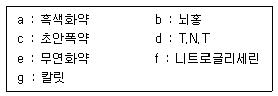
- a, b, d
- a, c, g
- d, e, g
- c, e, g
(정답률: 알수없음)
3. 기폭약에 대한 설명으로 옳지 않은 것은?
- 뇌홍은 Aluminium 을 질화하여 만든다.
- DDNP 는 둔감한 폭약의 기폭에 유리하다.
- 트리시네이트는 수중에 저장한다.
- 아지화납은 주로 α 형이 많이 사용된다.
(정답률: 알수없음)
4. ANFO 폭약의 원료로서 가장 적합한 질산암모늄의 형태는?
- 저비중 가루 모양
- 저비중 다공질 알갱이 모양
- 고밀도 알갱이 모양
- 고밀도 다공질 알갱이 모양
(정답률: 알수없음)
5. 휘발성(揮發性)인 담황색 내지 분홍색 액체로서 -20℃ 이상의 기온에서도 잘 동결되지 않는 것은?
- 니트로글리세린[C3H5(ONO2)3]
- 니트로글리콜[(C2H4(ONO2)2]
- 티.엔.티[T.N.T]
- 헥소겐
(정답률: 알수없음)
6. 백색의 주상결정으로 충격엔 예민하지만 열에는 둔감하고 점화는 어렵지만 뇌관에 민감한 폭약은?
- C10H6(NO2)2
- C6H5(NO2)2
- C(CH2ONO2)4
- C6H2(NO2)3Cl
(정답률: 알수없음)
7. 갱내에서 다이너마이트 또는 Carlit 를 폭발시킬 때 생성가스 중 가장 유독성이 없는 것은?
- 염화수소가스
- 일산화탄소
- 과산화질소
- 탄산가스
(정답률: 알수없음)
8. 사상순폭 시험의 시료 약포의 약경은 몇 mm 인가?
- 25mm
- 28mm
- 30mm
- 32mm
(정답률: 알수없음)
9. 디니트로벤젠의 주용도는?
- 기폭제로 사용한다.
- 질산암모늄 폭약의 예감제로 사용한다.
- 작약으로 사용한다.
- 화약류에 사용하지 않는다.
(정답률: 알수없음)
10. 폭굉은 진행하는 선속도를 뜻하며 연소와 폭굉을 구분하는 것을 무엇이라 하는가?
- 폭발속도
- 충격파
- 추진효과
- 자연분해
(정답률: 알수없음)
11. 화약류 안정도의 시험이 아닌 것은?
- 유리산시험
- 내열시험
- 가열시험
- 마찰시험
(정답률: 알수없음)
12. 다음 중 검정폭약은?
- 다이너마이트 1호
- 다이너마이트 2호
- 다이너마이트 3호
- 다이너마이트 4호
(정답률: 알수없음)
13. 니트로글리세린과 니트로셀룰로오스의 콜로이드화가 진행되면 내부의 기포가 없어져서 다이너마이트가 둔감하게되고 폭발이 어렵게 되는 현상은?
- 고화(Caking)현상
- 노화(Aging)현상
- 사압현상
- 흡습현상
(정답률: 알수없음)
14. 화약류제조시 원료배합에 있어서 산소평형값이 정(正)으로 하지 않으면 안되는 장소는?
- 노천발파
- 갱내발파
- 트렌치발파
- 수중발파
(정답률: 알수없음)
15. 28mm 젤라틴다이너마이트의 최대순폭거리가 140mm였다. 순폭도는 얼마인가?
- 3
- 4
- 5
- 6
(정답률: 알수없음)
16. 안정도시험에서 내열시험의 온도조건으로 맞는 것은?
- 섭씨65도
- 섭씨75도
- 섭씨85도
- 섭씨95도
(정답률: 알수없음)
17. 질산법으로 RDX를 제조시 진한질산과 우로트로핀의 비율을 얼마로 조정하면서 제조반응기에 주입하여야 하는가?
- 진한질산 : 우로트로핀 = 2 : 8
- 진한질산 : 우로트로핀 = 3 : 7
- 진한질산 : 우로트로핀 = 5 : 5
- 진한질산 : 우로트로핀 = 10 : 1
(정답률: 알수없음)
18. 화약류제조시 메탄 및 탄진의 폭발을 방지하기 위하여 탄광용 검정폭약에 첨가하는 물질은?
- 고화방지제
- 안정제
- 감열소염제
- 발열제
(정답률: 알수없음)
19. PETN 이나 RDX 를 마사류로 피복한 후 아스팔트, 플라스틱, 수지 등에 의해 방수처리한 도폭선은?
- 심수용 도폭선
- 제3종 도폭선
- 제2종 도폭선
- 제1종 도폭선
(정답률: 알수없음)
20. 부동 다이너마이트의 니트로글리세린에 포함된 니트로글리콜의 함유량은 얼마이고 어떤 온도에서 사용하는가?
- 니트로글리세린의 15%를 니트로글리콜로 치환한 것으로 -20℃에서 사용 한다.
- 니트로글리세린의 25%를 니트로글리콜로 치환한 것으로 -10℃에서 사용 한다.
- 니트로글리세린의 15%를 니트로글리콜로 치환한 것으로 -10℃에서 사용 한다.
- 니트로글리세린의 25%를 니트로글리콜로 치환한 것으로 -20℃에서 사용 한다.
(정답률: 알수없음)
2과목: 발파공학
21. 지발전기뇌관의 시차가 짧을수록 어떤 현상이 일어나겠는가?
- 암석은 크게 파쇄되고 가깝게 비산된다.
- 암석은 작게 파쇄되고 멀리 비산된다.
- 암석은 크게 파쇄되고 멀리 비산된다.
- 암석은 작게 파쇄되고 가깝게 비산된다.
(정답률: 알수없음)
22. 다음 미진동 파쇄기에 의한 발파 방법의 설명으로 틀린 것은?
- 천공은 약통경에 맞추어서 32 ∼ 34mm가 좋다.
- 전색물이 약하면 파쇄를 못하므로 시멘트 모르타르로 단단히 밀폐시키는 것을 원칙으로 한다.
- 전색물은 바로 굳지 않으므로 겨울철에는 전색 후 30분 정도의 대기시간이 필요하다.
- 전색재료로는 Portland cement, 건조된 모래, 시멘트 급결재의 비중비를 1:1:1의 비율로 혼합한다.
(정답률: 알수없음)
23. 누두공 실험에서 장약량 L1에 의해 형성된 누두공의 누두지수(n)가 0.9 정도의 약장약 이었다고 할 때 누두지수 (n) 1.2 정도의 발파를 하기 위한 장약량 L2는 시험발파시 장약량 L1보다 몇 % 증가하는가? (단, 기타 조건은 동일하다.)
- 57%
- 87%
- 100%
- 187%
(정답률: 알수없음)
24. 다음은 발파의 시행 순서이다. 옳은 것은?
- 장전 - 천공 - 청소 - 메지 - 점화
- 청소 - 천공 - 장전 - 메지 - 점화
- 천공 - 청소 - 메지 - 장전 - 점화
- 천공 - 청소 - 장전 - 메지 - 점화
(정답률: 알수없음)
25. 수준발파(leveling)에 관한 설명 중 틀린 것은?
- 계단높이가 최대 저항선(maximum burden)의 2배보다 높은 곳에 사용한다.
- 발파공 사이 지연시간을 짧게 한다.
- 보통 수직천공을 한다.
- 비산위험과 지반진동을 줄이기 위해 소구경 발파공을 사용한다.
(정답률: 알수없음)
26. 다음 폭약 선정시 고려 사항으로 올바른 것은?
- 고온의 막장에서는 내압성 폭약을 사용한다.
- 붙이기 발파는 동적효과가 매우 큰 영향을 준다.
- 굳은 암석에는 동적효과가 작은 폭약을 사용한다.
- 장공발파에는 비중이 큰 폭약을 사용한다.
(정답률: 알수없음)
27. 바닥으로부터 2.5m 높이에 심빼기가 위치하고 있는 경우, 파쇄암이 최대 비산속도(V)로 수평방향으로 날아갔다면 비산거리는 얼마인가? (단, 최대 비상속도는 V(m/s) = 34(LD)-0.5를 사용하며, LD는 폭약 단위 중량 당의 채석중량으로 0.950(t/kg)이다.)
- 18 m
- 22 m
- 25 m
- 29 m
(정답률: 알수없음)
28. 다음 중 수중발파 시 폭약의 요건으로서 가장 중시하여야 할 사항은?
- 폭속
- 순폭도
- 비에너지
- 내압성
(정답률: 알수없음)
29. 다음 중 발파계수의 산정에 필요한 것은?
- 폭약의 위력
- 저항선의 크기
- 뇌관의 성능
- 누두공의 크기
(정답률: 알수없음)
30. 어떤 발파현장에서 최소저항선을 1m로 하여 시험발파를 실시한 결과 표준장약량이 0.9kg이었다. 암석 및 폭약의 종류, 발파방법 등을 현재와 같이하고 최소저항선만 4m까지 증가 시킬경우 표준장약량은 얼마나 되겠는가?
- 20.45kg
- 25.55kg
- 42.35kg
- 57.60kg
(정답률: 알수없음)
31. 일반적인 진동(정현진동)의 표시법 중 실효치를 나타내는 표기법은? (단, Ao는 진동의 최대값(peak level)을 나타낸다.)
- Ao
- 2Ao
- Ao/√2
- 2Ao/π
(정답률: 알수없음)
32. 터널발파에서 주위 암반에 손상을 작게 하기 위한 장약방법으로 이용하는 것은?
- 노이만 효과
- 디커플링 효과
- 밀장전 효과
- 홉킨슨 효과
(정답률: 알수없음)
33. 잔류약의 원인이 될 수 없는 것은?
- 높은 순폭도
- 약경 과소
- 분말계 폭약의 비중 과대
- 채널효과(channel effect)
(정답률: 알수없음)
34. 다음 설명 중 틀리는 것은?
- 자유면이 한개인 경우 최소저항선의 길이와 폭파에 의한 누두공의 반지름이 같을 때 발파효과가 제일 좋다.
- "가"항의 경우 장약량은 최소저항선의 길이의 제곱근에 비례한다.
- 발파에 의한 진동을 경감시키기 위하여 장약량의 규제나 지발발파가 자주 사용된다.
- 발파에 의한 광해(鑛害)문제로서는 분진과 발파진동 등도 중요하다.
(정답률: 알수없음)
35. 계단식(벤치)발파에 관련된 다음 설명 중 맞는 것은?
- 계단식 발파시 저면부분에서의 파괴 용이성은 경사천공보다 수직천공을 이용하면 더 양호해 진다.
- 공간 거리를 작게하고 최소저항선를 크게하면 파쇄암편의 크기는 작아진다.
- 초과천공(subdrilling)은 벤치 바닥의 요철을 없애기 위한 목적으로 사용되며 일반적으로 저항거리의 10%를 적용한다.
- Swelling을 위한 발파패턴의 변화방법은 비장약량과 공경은 증가시키고 최소저항선을 감소시켜야 한다.
(정답률: 알수없음)
36. 천공지름이 크면 어떤 영향을 주는가?
- 파쇄 암석의 크기가 커진다.
- 비산의 위험도가 작아진다.
- 예정된 최소저항선 공저 하부에 균열이 적게 생긴다.
- 장전이 쉽고 메지량이 적어진다.
(정답률: 알수없음)
37. 누두공 이론에서 암석계수는 어떤 다이너마이트를 기준으로 한 것인가?
- 니트로글리세린 30%
- 니트로글리세린 40%
- 니트로글리세린 50%
- 니트로글리세린 60%
(정답률: 알수없음)
38. 전기뇌관 결선시 일반적인 주의 사항으로 틀린 것은?
- 각선 상호간의 결선시 각각 결선할 선의 끝 부분을 5cm 정도씩 벗긴 다음, 5회 이상 돌려 감아 단단하게 결선한다.
- 결선 저항은 될수록 작게해야 한다.
- 단락 방지조치를 해야한다.
- 도폭선과 뇌관의 결합시 뇌관은 후두부를 폭파반대방향으로 향하도록 해야 한다.
(정답률: 알수없음)
39. 다음 발파조건으로 벤치발파를 실시하고자 한다. 비장약량(specific charge)은 얼마인가?
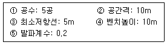
- 1.0kg/m3
- 0.5kg/m3
- 0.3kg/m3
- 0.2kg/m3
(정답률: 알수없음)
40. 다음 중 공심을 구하는 공식은? (단, D: 공심, W: 저항선, m: 장약장)
- D=W+m/2
- D=W+m
- D=W/2+m
- D=m+W/2
(정답률: 알수없음)
3과목: 암석역학
41. 다음 중 시간에 따른 암석의 역학적 변형을 측정하는 시험은?
- 동역학적 시험
- 정역학적 시험
- Creep 시험
- Packer 시험
(정답률: 알수없음)
42. 어떤 사암(sandstone)의 점착강도(cohesion)가 15 MPa, 마찰각(angle of friction)이 45°일 때, 15 MPa의 봉압(σ3)이 작용할 경우, 시료가 파괴되기 위한 축방향응력 σ1 의 크기는?
- 100 MPa
- 120 MPa
- 140 MPa
- 160 MPa
(정답률: 알수없음)
43. 길이 10cm의 고무줄에 인장력을 가하여 5mm가 늘어났다면 이때의 변형률은?
- 0.⑤
- 0.10
- 0.5
- 1.0
(정답률: 알수없음)
44. 지름 4cm, 길이 8cm인 원주형 암석 시편을 축방향으로 가압하였더니 12.56톤에서 파괴되었다. 압축강도는 얼마인가?
- 250 kg/cm2
- 392.5 kg/cm2
- 785 kg/cm2
- 1000 kg/cm2
(정답률: 알수없음)
45. 다음 그림과 같은 각주형 암석시편에 만곡시험(파단시험)을 하였을 때 파괴가 가장 먼저 일어나는 부분은?
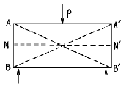


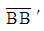
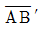
(정답률: 알수없음)
46. 암석표면에서의 반발정도를 이용하여 측정하는 경도는?
- 모스(Mohs) 경도
- 쇼어(Shore) 경도
- 로스엔젤스(Los Angeles) 경도
- 비커스(Vickers) 경도
(정답률: 알수없음)
47. 물체에 작용하는 응력 상태가 σ1 = σ2 = σ3 < 0일 때 그 물체는 파괴되지 않는데 이런 상태를 바르게 표현한 것은?
- 삼축응력상태
- 압축응력상태
- 정수압상태
- 인장응력상태
(정답률: 알수없음)
48. 암석의 파괴를 설명하는 그리피스(Griffith)이론은 다음 사항중 어느 것과 가장 밀접한 관계가 있는가?
- 인장파괴
- 압축파괴
- 전단파괴
- 내부마찰에 의한 파괴
(정답률: 알수없음)
49. 초기 지압에 대한 설명 중 틀린 것은?
- 주로 암반의 자중에 의해서 발생한다.
- 1차 지압이라고도 한다.
- 연직응력은 항상 수평응력 보다 크다.
- 암반에 공동을 굴착하면 초기지압은 변화한다.
(정답률: 알수없음)
50. 암반의 강도를 계산하기 위하여 Hoek-Brown의 경험식을 사용할 때 필요한 상수 m과 s를 추정하기 위하여 사용할 수 있는 체계는?
- RQD
- JRC
- TCR
- RMR
(정답률: 알수없음)
51. 암석의 일축압축강도 시험에 대한 다음 설명 중 틀린 것은?
- 암석 시험편이 클수록 절리의 영향으로 압축강도가 저하된다.
- 암석 시험편의 표면이 평탄하지 않을 때는 압축강도가 증가된다.
- 하중을 가하는 속도가 증가하면 압축강도는 증가된다.
- 암석 시험편의 길이 대 직경의 비가 클수록 압축강도는 저하된다.
(정답률: 알수없음)
52. 단위체적의 탄성체에 서서히 힘을 가할 때 응력(σ)이 0에서 σ 까지 증가하는 사이에 변형율(ε)이 0에서 ε 까지 변화되면 단위체적당 탄성변형율에너지 W는 어떻게 표시되는가?
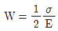
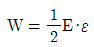
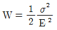
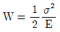
(정답률: 알수없음)
53. 암반의 RMR이 30인 경우 암반의 변형계수(EM)를 구하는 식으로 알맞은 것은?
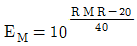
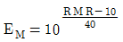
- EM = 2RMR - 100
- EM = 3RMR - 100
(정답률: 알수없음)
54. 파괴이론에 있어서 트레스카(tresca)의 최대전단응력설에 대한 설명으로 틀린 것은?
- 최대전단응력은 최대 및 최소주응력의 차의 반(半)으로 표시된다.
- 압축강도와 인장강도는 같게 나타난다.
- 중간 주응력의 영향이 고려되고 있다.
- 최대전단응력설은 최대와 최소주응력의 차가 어느 일 정치에 도달하면 항복 및 파괴가 일어난다는 설이다.
(정답률: 알수없음)
55. 어느 암석이 평면응력상태의 응력조건에서 mohr의 응력원을 만족시킬 경우 최대주응력이 300㎏/cm2, 최소 주응력이 200㎏/cm2 이면 이와 45° 의 경사를 이루는 면상의 수직응력(σn)과 전단응력(τ)은 각각 얼마인가?
- σn = 250㎏/cm2, τ = 0
- σn = 350㎏/cm2, τ = 0
- σn = 250㎏/cm2, τ = 50 ㎏/cm2
- σn = 350㎏/cm2, τ = 50 ㎏/cm2
(정답률: 알수없음)
56. 삼축압축시험에 관한 설명 중 맞는 것은?
- 봉압이 증가하면 암석의 파괴강도는 증가한다.
- 세 개의 주응력 중 두 개의 주응력이 0인 상태이다.
- 대기압 하에서 행하는 실험법이다.
- 봉압이 증가하면 변형연화현상이 발생된다.
(정답률: 알수없음)
57. 암석 내에 포함된 균열이 전파하기 쉬운 정도를 표현하는 값은?
- 응력확대계수
- 파괴인성
- 변형률에너지
- 균열계수
(정답률: 알수없음)
58. 다음 설명 중 옳지 않은 것은?
- 일반 암석은 상온상압(常溫常壓)하에서 취성파괴한다.
- 일반 암석은 고온고압하에서 연성파괴한다.
- 압축강도와 인장강도의 비를 취성도라 한다.
- 취성파괴는 물체내의 균열의 전파속도가 낮기때문에 발생한다.
(정답률: 알수없음)
59. 직각으로부터의 각의 변화를 나타내는 양은 다음 중 어느 것인가?
- 전단변형률
- 수직변형률
- 수직응력
- 전단응력
(정답률: 알수없음)
60. 초기지압 측정방법이 아닌 것은?
- 응력해방법
- 응력보상법
- 응력재하법
- 수압파쇄법
(정답률: 알수없음)
4과목: 화약류 안전관리 관계 법규
61. 1급 저장소에 폭약 10톤을 저장하였다. 보안물건과의 보안거리 규정으로 맞는 것은?
- 2종: 480미터, 3종: 270미터
- 1종: 370미터, 2종: 320미터
- 3종: 170미터, 4종: 110미터
- 1종: 340미터, 3종: 270미터
(정답률: 알수없음)
62. 화약류를 양도· 양수하려는 사람은 누구의 허가를 받아야 하는가?
- 영업지 관할 지방경찰청장
- 영업지 관할 경찰서장
- 주소지 관할 경찰서장
- 사용지 관할 지방경찰청장
(정답률: 알수없음)
63. 화약류 폐기시 폭발 또는 연소처리할 때 폐기 장소 주위에 높이 몇 m 이상의 흙둑을 설치하여야 하는가?
- 2m
- 3m
- 4m
- 5m
(정답률: 알수없음)
64. 화약류를 실은 차량이 서로 주차하는 때에 앞차와 뒷차와의 거리는? (단, 법령상 최단 기준임)
- 200미터
- 150미터
- 100미터
- 50미터
(정답률: 알수없음)
65. 화약류의 포장은 ( )이 정하는 화약류포장기준에 따라야 한다. ( )에 적당한 말은?
- 행정자치부령
- 경찰청령
- 대통령령
- 국무총리령
(정답률: 알수없음)
66. 화약류 저장소에 폭약 40톤을 저장하는 경우 지반의 두께 기준으로서 옳은 것은? (단, 지하1급 저장소임)
- 28.0m 이상
- 25.0m 이상
- 29.0m 이상
- 26.0m 이상
(정답률: 알수없음)
67. 대발파의 기술상의 기준으로 틀린 것은?
- 갱도의 굴진작업을 하는 때에는 화약류를 여유있게 가지고 들어갈 것
- 발파의 계획과 작업은 1급화약류관리보안책임자로 하여금 직접하게 할 것
- 약포는 약실에 밀접하게 장전하고 습기가 차지 않도록 할 것
- 갱안의 도폭선과 전선은 간단하게 배선할 것
(정답률: 알수없음)
68. 다음 중 꽃불류 저장소의 위치, 구조 및 설비기준에 맞지 않는 것은?
- 단층 콘크리트 블록조로 하고, 기초는 지면보다 낮게한다.
- 저장소 벽의 두께는 콘크리트조일 때 10㎝이상으로한다.
- 저장소의 마루 밑에는 지상 1급 저장소에 준하는 환기통을 저장소의 크기에 따라 2개 이상 설치한다.
- 저장소 주위에는 흙둑, 간이 흙둑 또는 방폭벽을 설치한다.
(정답률: 알수없음)
69. 안정도시험에 사용하는 것과 가장 거리가 먼 것은?
- 정제활석분
- 표준색지
- 적색 리트머스 시험지
- 옥도가리 전분지
(정답률: 알수없음)
70. 화약류 폐기의 기술상 기준으로 맞지 않는 것은?
- 해안으로부터 8km 떨어진 깊이 300m 이상의 바다밑에 가라앉도록 할 것
- 화약 또는 폭약은 조금씩 폭발 또는 연소 시킬 것
- 도화선은 땅속에 매몰하거나 습윤상태로 분해처리할 것
- 도폭선은 공업용뇌관 또는 전기뇌관으로 폭발 처리할 것
(정답률: 알수없음)
71. 화약류의 운반 방법이 옳은 것은?
- 화약류 제조소에서 8톤 트럭 1대로 5,000kg의 화약류를 양수하여 운전자와 운반책임자 2명만이 동승하고 판매업소 화약류저장소로 운반을 하였다.
- 화약류사용장소에서 사용하기 위하여 운전자와 운반책임자 2명만이 화약류저장소에서 사용장소로 화약류를 운반하였다. (단, 화약류 사용현장에는 화약류저장소가 없다.)
- 뇌홍을 수분 또는 알콜성분이 23%정도 머금은 상태에서 운반하였다.
- 니트로셀룰로오스를 수분 또는 알콜성분이 20%정도머금은 상태에서 운반하였다.
(정답률: 알수없음)
72. 불이 날 위험이 있는 일광건조장과 다른 시설간의 거리가 20m미만인 때에는 어떻게 하여야 하는가?
- 그 시설간의 사이에 방화벽을 설치한다.
- 그 시설간의 사이에 상록활엽수를 빽빽하게 심는다.
- 그 시설과의 사이에 방폭벽을 설치한다.
- 경사 45도 이하로 흙둑을 쌓는다.
(정답률: 알수없음)
73. 지상 1급 저장소의 창은 저장소의 기초로부터 얼마 이상의 높이로 하여야 하는가? (단, 법령상 최소 높이임)
- 150cm
- 170cm
- 180cm
- 200cm
(정답률: 알수없음)
74. 화약류를 수입한 사람은 지체없이 행정자치부령이 정하는 바에 의하여 누구에게 신고 하여야 하는가?
- 경찰청장
- 지방경찰청장
- 수입지 관할 경찰서장
- 행정자치부장관
(정답률: 알수없음)
75. 위험공실의 시설기준에 관한 사항중 거리가 먼 것은?
- 내화성 건물로 하여 별채로 할 것
- 규정에 의한 피뢰장치를 할 것
- 폭발위험이 있는 공실은 규정에 의한 흙둑을 설치할 것
- 공실안에는 온도 및 습도의 조정장치를 설치할 것
(정답률: 알수없음)
76. 사용허가를 받지 아니하고 화약류를 사용할 수 있는 사람으로서 영화 또는 연극의 효과를 위하여 1일 동일한 장소에서 사용할 수 있는 수량은?
- 원료화약 또는 폭약 15g 미만의 꽃불류 100개이하
- 원료화약 또는 폭약 15g 이상 30g 미만의 꽃불류 50개이하
- 원료화약 또는 폭약 30g 이상 50g 이하의 꽃불류 5개이하
- 발연통· 촬영조명통 또는 폭약(폭발음을 내는 것에 한한다) 0.2g 이하의 꽃불류
(정답률: 알수없음)
77. 간이저장소에 "미진동파쇄기"를 저장하고자 한다. 최대 저장량이 맞는 것은?
- 3000개
- 5000개
- 1000개
- 300개
(정답률: 알수없음)
78. 화약류의 사용지를 관할하는 경찰서장의 사용허가를 받지아니하고 발파 또는 연소시킬 경우의 처벌 내용은? (단, 광업법에 의한 경우 제외)
- 5년 이하의 징역
- 500만원 이하의 벌금형
- 3년 이하의 징역
- 1000만원 이하의 과태료
(정답률: 알수없음)
79. 경찰청장과 산업자원부장관의 공동 고시로 정하는 원료·규격 및 혼합비율과 기폭감도시험에 의하여 제조된 폭약은?
- 함수폭약
- 초유폭약
- 에멀죤폭약
- 액체산소폭약
(정답률: 알수없음)
80. 화약류 판매업의 시설기준으로 잘못된 사항은?
- 자가전용의 화약류 저장소를 설치할 것
- 화약류 저장소에는 차량에 의한 안전운반이 가능하도록 저장소 입구까지 진입로를 개설할 것
- 화약류 저장소 주위에 도난방지등을 위한 경비초소를 설치할 것
- 판매업소 및 화약류저장소의 위치는 유통과정에 있어서 위험성이 없는 곳일 것
(정답률: 알수없음)